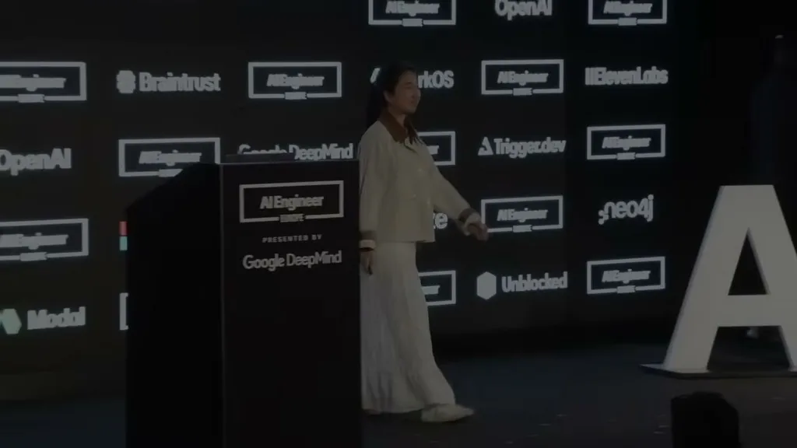
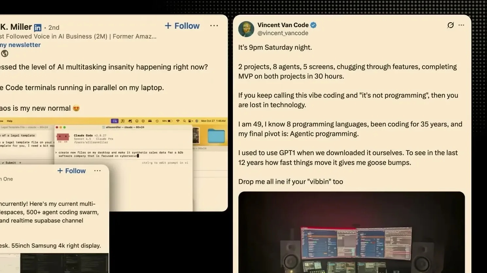
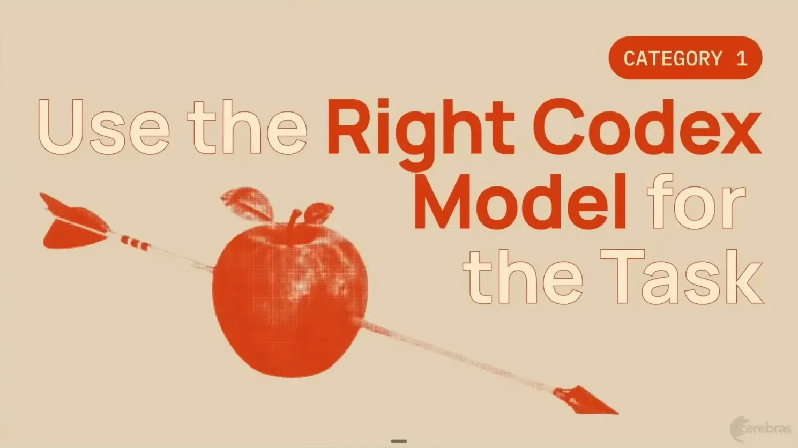
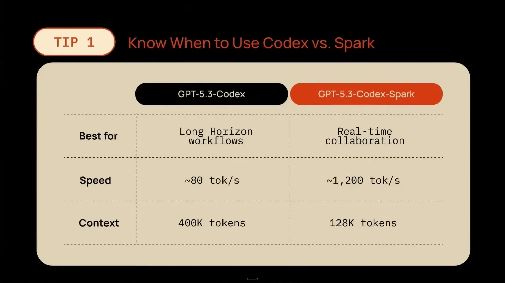
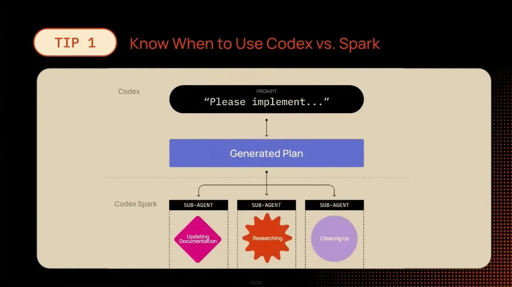
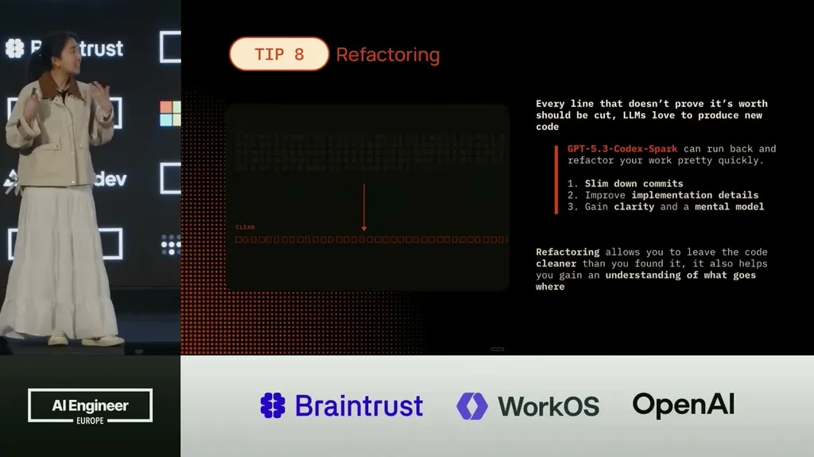
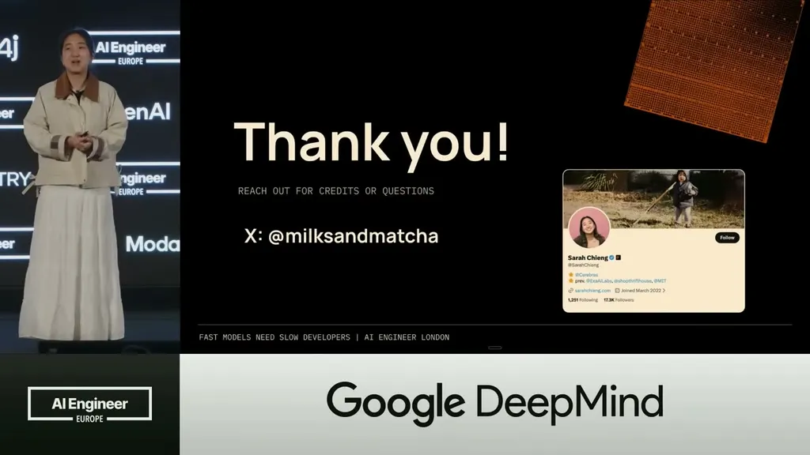
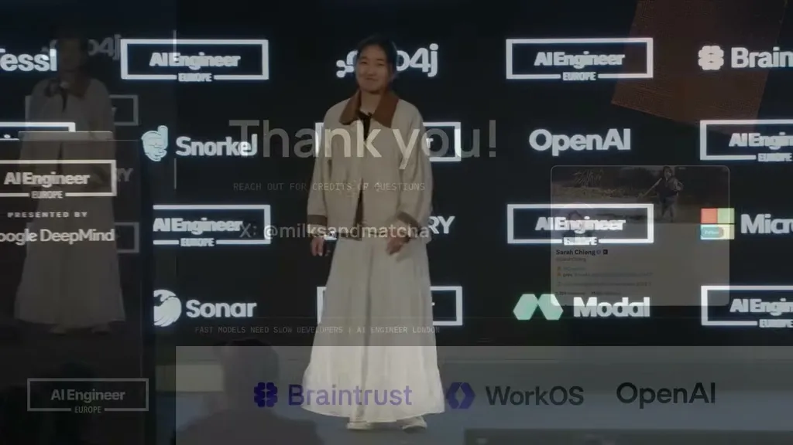

Argues that a 20x jump in code-generation speed (Cerebras/OpenAI's Codex Spark at 1,200 tokens/sec vs
Speaker frames the four-file setup as a direct response to compaction arriving 20x sooner, though the talk does not show it tested against a non-external-memory baseline (ours).
“Codex Spark can generate code at 1,200 tokens per second”
said at 00:30“if you look at the Sonnet family or the Opus family, those can generate code at about 40 to 60 tokens per second”
said at 01:01“hardware and memory movement takes up 50 to 80% of that latency time for inference”
said at 03:34“This is why Nvidia bought Groq for $20 a few months ago”
said at 04:36“instead of activating the entire model all at once for every single token, we're only activating a subset of experts for every time”
said at 05:38“at 1,200 tokens per second, a model like Codex Spark makes validation basically free. There is no excuse and no reason why you should not be doing things like this”
said at 10:14“I can have it tell it to generate 15 versions in the same time that it would have taken the a previous model generate one version, and I can cherry pick the version that I like the best”
said at 10:45“Now, if you take 10 minutes divided by 20, you are now getting compaction in 30 seconds. And so, context managing, especially with fast inference, is more important to think about than ever”
said at 15:23“We have agents.md, which is where we're actually defining all our agents, our subagents. We have plan.md, which is what we're creating at the very beginning”
said at 15:54The core argument -- that faster generation multiplies existing bad habits rather than fixing them -- generalizes beyond this specific model; the four-file external-memory pattern is a concrete, reusable structure worth testing on any agent workflow prone to compaction loss (ours).








| Stance | Claim | t |
|---|---|---|
| asserts | Codex Spark, released by Cerebras and OpenAI about a month before the talk, generates code at 1,200 tokens per second. | 00:30 |
| asserts | Sonnet and Opus family models generate code at about 40-60 tokens per second, making Codex Spark roughly 20x faster. | 01:01 |
| asserts | Memory movement between chip and off-chip memory accounts for 50-80% of inference latency, which is the core hardware bottleneck driving new chip designs. | 03:34 |
| asserts | Disaggregated prefill/decode inference has become commercialized recently, which the speaker cites as the reason Nvidia acquired Groq (the transcript's ASR drops the word 'billion' after the dollar figure). | 04:36 |
| asserts | Mixture-of-experts architectures activate only a subset of experts per token instead of the whole model, giving the intelligence of a larger model at the compute cost of a smaller one. | 05:38 |
| recommends | At 1,200 tokens per second, validation steps like test suites, linting, pre-commit hooks, diff reviews, and browser-based QA are essentially free and should run at every step. | 10:14 |
| recommends | Fast generation makes it practical to generate many variants of a design and cherry-pick the best one rather than accepting the first result. | 10:45 |
| warns | Because generation is 20x faster, context that used to take 10 minutes to fill now fills in about 30 seconds, triggering compaction proportionally sooner. | 15:23 |
| recommends | An external four-file memory system (agents.md, plan.md, progress.md, verify.md) lets a new agent session pick up where the last left off despite faster compaction. | 15:54 |
Machine-readable copy embedded in this page (script#ontology) and in the corpus ontology.